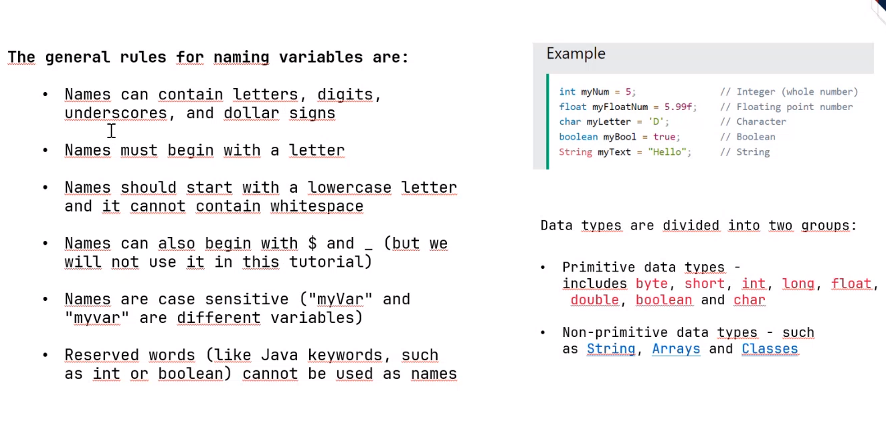

06/11/2023
Presentacion del docente.
07/11/2023
Introducción a los temas que se tratarán.
08/11/2023
markdown
... palabras en negrita
palabras en cursiva
palabras en negrita y cursiva
texto tachado
09/11/2023
Apuntes en el git
El git recopila las conexiones y cambios
Fue creado en 2005 por Linus Torvalds
Facilita el trabajo colaborativo
Comprobar las versiones de git:
git --version
git -v
Ayuda de git
git -h
git --help
Pull: para bajar cambios anteriores
Push: para subir los cambios al proyecto
Clone: copia un repositorio a tu computadora local
Commit: guarda los cambios realizados en la carpeta actual
Fetch: comando para forzar el proceso y hacer que el programa funcione
Notas:
En la industria el 70% de la infraestructura esta en linux
El kernel de MacOs se basa o es linux
todos los comandos de git llevan "git", y los que no entonces seran de windows
limpiar terminal: clear
limpiar terminal: CTRL+L
cd/home/usuario/proyecto_git
listar: ls -l
ubicacion de las carpetas(directorio actual): pwd
ver todos los directorio: ls
mostrar lo que hay dentro de un archivo: cat
inicializar repositorio: git init
ver la version del git: git --version
configurar nombre: git config --global user.name "name"
configurara correo: git config --global user.email "email"
permite agregar archivos, archivos que no estan siendo respaldados: git add
como esta el estado en el background: git status
autocompletado: tab
para subir todos los archivos: git add .
guardar cambios: git commit
cear archivo: touch
crear un archivo y escribir dentro de el: echo "hola" > file.txt
para abrir un archivo pero no en la terminal: code .gitignore
para crear archivo con su nombre: touch name.txt unificar una rama: git merge craer una rama: git branch
acceder a todos los directorios: ls
volver hacia atras: cd ..
directorio anterior: ls
saber cual es la ruta(lugar en el que se encuentra en el equipo): pwd
crear carpetas: mkdir "nombre_de_la_carpeta"
desplazarce dentro de la carpeta: cd nombre_de_la_carpeta\ Git
limpiar consola: clear
configuracion global(cualquiera que tengo el usuario podra hacer cambios): git config --global
crear un fichero de cogido: touch nombre.java
cambiar el nombre de la rama: git branch -m main
borrar una rama: git push origin :branchName main será la rama principal del proyecto
crear commits(toma fotografias de cada avance): git commit -m "Este es mi commit Nro"
crear fotografias del proyecto (guardarlo): git add nombre_del_acrhivo.java
como ver si la fotografia se ha realizado: git log
para eliminar un archivo: rm nombre_del_archivo.java
para ver el contenido de un archivo: cat nombre_del_archivo
volver para atras a la ultima fotografia: git checkout nombre_del_archivo.java
para regresar mas antes: git reset
para ver todo de mejor forma: git log --graph --pretty=oneline
abreviar los commits: git log --graph --decorate --all --oneline
archivo oculto(ocultar un fichero): touch.gitignore
sin realizar una fotografia ver lo que ha ido cambiando: git diff
ver diferencias entre dos versiones: git diff betweenVersions
subir todos los cambios al repositorio: git push origin master
Fecha: 13/11/2023
Antes de cambiarse de rama, en el git hacemos un git status para saber si podemos perder alguna actualizacion de informacion.
Si se realiza cambios sin guardar es posible volver a la anterior rama y recuperarlo
Para crear un archivo de java debe cumplir dos condiciones
Debe comenzar con mayuscula
La clase debe tener el mismo nombre del archivo
.Git merge: ayuda a unificar las ramas
echo Hi_Ismael> "java" ayuda a crear el archivo y darle la extension que necesito
Al final subir toda a git hub para que no se pierda la informacion reciente, esto es posible con un git push
Para subir la info a Github se usa:
git push -u y la direccion de nuestro git hub
Ejemplo:
git push -u https://github.com/Ismael-18/clases.git
Desarrollo de videojuegos
Realidad virtual
Desarrollo web
Desarrollo de Apps moviles
Netflix
Netflix
Fecha: 14/11/2023
parametro: sirve para caracterizar al metodo, le da las particularidades para que ejecute
todos los bucles siempre tienen un condicional definido
ambito o tambien conocido como modificador de acceso:
¿Que es?
Tiene tres posibilidades que son: public (para todos, todos lo pueden ver, tiene acceso publico, en general las clases seran publicas) protected (solo "amigos") private (solo "yo")
private: solo puede ser utilizada dentro de la clase en la cual fue declarada
protected: puede ser utilizada por cualquier clase hija y en su propia clase
public: puede ser utilizada desde cualquier lugar
15/11/2023
Actividad, Evento de Bienvenida 2023B en el teatro Politecnico
16/11/2023
*crear por medio del constructor
*el constructor, caracteristicas:
-es un "metodo" publico, no puedo ser privado porque alguien tiene que llamarlo.
-debe ser unico y tener el mismo nombre de la clase
-sino se lo coloca se autodefine
-se auto-ejecuta con "new" y una unica vez
-cada vez que se coloca "new" se crea un espacio en memoria para almacenar este objeto
(aquel que construye el objeto)
instancia = {crear -> utilizar un constructor - new(luego llamarlo, new lo llama)}
el computador lee la sentencia new, separa un espacio de memoria RAM para que pueda estar este objeto. Una vez en la RAM se necesita "algo" para poder ingresar y darle nombres
recolector de basura esta encargado de limpiar la ram
20/11/2023
Se trato todos los temas de bucles, en código.
public class Bucle{
private int nroTerminos=0;
//propiedades
public static void main(String[] args) throws Exception{
cicloRepetitivo();
}
/**
* Constructor
* @param nroTerminos
*/
public Bucle(int nroTerminos){
this.nroTerminos = nroTerminos;
}
public static void cicloRepetitivo(){
//ciclo
int nroTerminos=10;
int incremento=0;
for(; incremento<nroTerminos;incremento++){
System.out.println("Hola; " +incremento);
}
//ciclo
while (incremento<nroTerminos) {
System.out.println("While " + incremento++);
}
//ciclo
do{
System.out.println("do while " + ++incremento);
System.out.println("");
}while(incremento < nroTerminos);
}
public void tipoDato(){
//Tipo de dato primitivos -> variables
//son mas rapidos que los tipos de datos de referencia
byte bin =0; //almacena 1 y 0
boolean ban = true; // almacena true y flase
char c = 'c'; // almacena cualquier caracter
c = 54 ; // se le asigna un valor entero, tomara el valor ascii
// Cast implicito: proceso de conversion para almacenar numeros mas grandes y asignar espacion mas grandes
short edad = 37;
int i = 10;
// al asignarle una letra, se le dice al compilador que separe un gran espacio o poco espacio de memoria
long ll = 10L; // L indica que sera un enterp largo. Indica que separe un valor para almacenarlo
float f = 10.00000f; //
double d = 10.000d;
/**
* EJ:
* i = 5;
* la division: ll = i/2;
* ll = 2;
* ocupa automaticamente solo los enteros
*/
/** Tipos de dato de referencia = propiedades
* Objetos de referencia
* Funcionan de la misma manera que los datos primitivos
* Al usar estos tipos de datos por referencia, se debe ocupar una paqueteria que lo acompañe
* Brinda mayor opciones a diferencia de los datos primitivos
*/
String cadNum = "123";
Long L = 21L;
Integer I = 23;
Double dbl = 23.000;
Float F = 24.4f;
Boolean b = true;
Character ch = 'c';
String[] arr = {"uno", "dos", "tres"};
//Cast explicito
/**
* es un "por favor convierte..."
* proceso de conversion se llama cast
*/
ll = (long)i;
dbl = (double)F;
F = (float)i;
/** Conversion
*
*/
i = Integer.parseInt(cadNum);
F = Float.parseFloat(cadNum);
//Conversion desde el mismo tipo de dato
cadNum = I.toString();
cadNum = F.toString();
/**
* para crear un objeto se usa la palabra new
* ej
* Mujer mujer = new Mujer();
*/
}
}

21/11/2023
Clase no subida en teams
Semana: 22/11/2023 al 24/11/2023
27/11/2023
formato base: string, double
los tipos de datos primitivos son para variables. Se los puede invocar o separar espacio de memoria directamente en la ram
La maquina realiza procesos de conversion
Para realizar transformacion
Proceso de conversion
Cast implicito
Cuando hace la trasformacion de forma automatica
El lenguaje asume la transformacion
long l = 10L;
float f = 10.0000f;
double d = 10.0000d;
Cast explicito
-Lenguaje necesita que haga un casting (un por favor puedes convertir a float este entero)
ll = (long)i;
dbl = (double)ff;
ff = (float)i;
Tipos de datos de referencia
String cadNum = "123a";
Long ll = 21L;
Integer i = 23; //es un dato mas seguro que el int
Double dbl = 23.00;
Float flt = 23.0F;
Character ch = 'A';
Boolean b = true;
Proceso de conversion
//convert.
i = Integer.parseInt(cadNum);
// forza la conversion.
ff = Float.parseInt(cadNum);
cadNum = I.tostring();
cadNum = F.tostring();
Tipo de datos objeto
Persona persona = new Persona("Juan", 23);
Mujer m = new Mujer();
Proceso de refactorizacion: es reorganizar el codigo
28/11/2023
Static
Significa que no es dinamica, que solo esta en un bloque de memoria.
Genera un solo bloque de memoria.
Sirve para las variables.
//ejemplo
public static tipo_dato;
public static Mujer oMujer;
public static int PI = 3,14;
Se los necesita porque a veces se requiere un valor unico.
Por ejemplo PI, es un valor universal (una constante) y para no desperdiciar memoria al tener que crearse muchas veces, se lo crea como estatico para que todos puedan acceder a el, sin necesidad de acceder a mas espacios de memoria.
Cuando se crean staticos, estos pueden ser:
Estaticos de lectura: uso del final
public static final float PI = 3,14;
public static Mujer oMujer;
.equals : compara el contenido de un objeto
29/11/2023
Se trabajó código
public class CadenaUtilities {
public static void main(String[] args) {
// Declaraciones
byte asci[] = {71,70,71,72,73,75};
byte character[] = {'G', 'f', 'g'};
String cad = new String(asci);
System.out.println("Cadena original: " + cad);
//Para escoger hasta que posicion de la cadena asci se quiere
String cad2 = new String(asci,2,2);
System.out.println("Cadena con posicion y longitud: " + cad2);
//
String cad3 = new String(character);
System.out.println("cadena de caracteres: " + cad3);
String str = new String(cad3);
System.out.println("Cadena de cadena: " + str);
System.out.println("-------------------------------");
System.out.println("[+] operaciones string");
int len = str.length();
System.out.println("Longitud de la cadena: "+len);
Character c = str.charAt(1);
String s = c.toString();
System.out.println("chatAt(): El caracter en el indice 1 es: "+c);
System.out.println("c.tostring(): El caracter en el indice 1 es: "+s);
boolean b = str.equals("GFG"); //equals compara contenido
boolean B = str.equalsIgnoreCase("GFG"); //compara contenido sin importar si son mayusculas o minusculas
System.out.println("equalsIgnoreCase(): La cadena es igual a \"GFG\": " +b);
str.concat(".abc");
str.concat(".123");
str.concat(".*---+");
str.concat(".abc");
System.out.println("concat(): La concatenación es: " + str);
String str1 = new String("Hola");
String str2 = new String("Mundo");
String str3 = str1;
if (str1 == str2) { //valida referencia
System.out.println(" --> str==str2, La referencia del objeto es la misma");
}else{
System.out.println(" --> str!=str2, Las referencias son diferentes");
}
if (str1==str3) { //valida referencia
System.out.println(" --> str1==str2, La referencia del objeto es la misma");
}else{
System.out.println(" --> str1!=str2, Las referencias son diferentes");
}
//Referencias dan una puerta de entrada a las variables
str3 = "puede hacer cambios";
System.out.println("str1="+str3);
//para validar el valor
//la forma de hacerlo es a travez del objeto mismo
if (str1.equals(str2)) {
System.out.println("--> str1 equals str2, Los valores son los mismos");
}
//en teoria se puede ingresar a un espacio de memoria sin referencia
//for(;;) new String(); //for infinito que puede llenar todos los espacios de memoria y afectar la memoria ram
/************************************************************************** */
String subStrInicia = str.substring(4); //toma la cadena desde el valor en esa posicion
System.out.println(subStrInicia);
String subStr123 = str.substring(8, 11);
System.out.println("substring(): Substring del indice 8 al 3: "+subStr123);
String subStr1 = str.substring(4,str.length());
System.out.println("substring(): substring desde indice 4 hasta el final: " +subStr1);
String subStr2 = str.replace('a', 'A');
System.out.println("replace(): Reemplazar los valores de A por mayuscula: "+subStr2);
String subStr3 = str.toUpperCase();
System.out.println("toUpperCase(): La conversion a mayusculas es: " +subStr3);
String subStr4 = str.toLowerCase();
System.out.println(" toLowerCase(): Convertir todos los caracteres a minusculas" +subStr4);
//Para hacer divisiones
//split: division de cadenas
//ayuda a la segmentacion de cadenas
//crear subcadenas a partir de una cadena
String[] strSplit = str.split("."); // gfg abc 123 *--+ abc
//for (int i = 0; i<strSplit.length; i++)
System.out.println(" str.split(\".\"): dividir la cadena segun el punto: " +strSplit);
for (String subS : strSplit) { // acaba de crear 5 segmentos del array
System.out.print(subS+ " "); // for "inteligente", tiene tres puntos automaticos
} //empezara al inicio del array y terminara al final del mismo
System.out.println("str = "+str);
for (char c1 : str.toCharArray()) { //toarray: {'G', 'f', 'g' '.', ...}
System.out.println(c1);
}
System.out.println("---------------");
for (char c2 : "abcd".toCharArray()) {
System.out.println(c2);
}
int a=12;
str = str + a;
str = str.concat(String.valueOf(a)); //valueof: convertir
System.out.println("str = "+str);
//para sacar un valor en especial o un elemento de alguna pocision especial
//para encontrar en que posicion se en encuentra algo
int indice123 = str.indexOf("123");
System.out.println("indexof(): Indice donde empieza \"123\": "+indice123);
System.out.println("cadena a partide de 123 es "+str.substring(indice123, str.length()));
if (str.contains("123")) {
System.out.println("contain(x): La cadena contiene \"123\":"+true);
}else{
System.out.println("contain(x): La cadena no contiene \"123\"."+false);
}
/*TRIM: eliminar espacios en blanco */
String nombre = " pepe alimaña ";
nombre = nombre.trim();
System.out.println("nombre trim() = "+nombre);
}
private static void getDemoString() {
//Formas para representar un String
String name1 = "Geeks";
String s = new String("Welcom");
System.out.println(name1);
System.out.println(s);
//Existen veces que el compilador hace una optimizacion de memoria y puede guardar el mismo valor para ambos variables en un mismo espacio de memoria
String s1 = "Tat";
String s2 = "Tat";
//el new separa los espacios de memoria, para que no vaya a generar problemas
String s3 = new String("Tat");
String s4 = new String("Tat");
//se utiliza cuando no se quiere alterar informacion
//son secuencias inmutables
StringBuffer demoString = new StringBuffer("Geeks");
StringBuilder demoString1 = new StringBuilder();
demoString1.append("Geeks");
demoString1.insert(0,"Welcome to ");
System.out.println(demoString1);
//ahorra memoria
demoString1.append("GFG");
demoString1.append("123");
demoString1.append("abc");
System.out.println(demoString1);
name1 = name1.concat("hOLA");
name1 = name1.concat("Hola");
}
}
30/11/2023
Se trabajó código
import java.util.Scanner;
public class Mujer{
//atributos de clase mujer
public String nombre;
private int edad;
private double altura;
//Metodos
//Construnctor por defecto
public Mujer(){ //constructor
nombre= "Ana";
edad = 25; //Atributos
altura = 1.60;
System.out.println("Mi nombre de construccion es: " + nombre);
}
public void saludar(){
System.out.println("Hola, soy una mujer y me llamo " + nombre);
}
public void cantar(){
System.out.println("Estoy cantando...");
}
public void bailar(){
System.out.println("Bailo con pasos elegantes y lindos movimientos");
}
public void saludarMujer(){
//Scanner sc = new Scanner(System.in);
System.out.println("Hola, soy una mujer y me llamo " + nombre);
System.out.println("¿Cual es tu nombre?");
String nombre = ((Scanner) App.sc).nextLine();
System.out.println("Binvenido a mu casa: "+nombre);
System.out.println("¿Cual es tu edad?");
edad = ((Scanner) App.sc).nextInt();
System.out.println("Tu edad es: "+edad);
int resto = edad % 3;
if (resto == 0){
System.out.println("Tu edad es multiplo de 3.");
}else{
System.out.println("Tu edad no es multiplo de 3.");
}
String sim[] = {"/","|","-","\\"," "};
for(int i = 0; i < 100 ; i++){
}
}
}
04/12/2023
Se trabajó un ejercicio de los poliretos
public class Static {
public static void main(String[] args) {
serieLoad();
serieWaiting();
}
public static void serieLoad(){
String signoLoad[]={"|", "/", "-", "\\"};
for(int i = 0; i <= 100; i++){
String c = signoLoad[i%4];
System.out.print("\r Loading "+ c +" "+ i +" %");
try {Thread.sleep(100);}
catch (InterruptedException ie) {}
}
System.out.println();
}
public static void serieWaiting(){
String signoWaiting[]={"0oo", "o0o", "oo0", "o0o"};
for(int i = 0; i <= 100; i++){
String c = signoWaiting[i%4];
System.out.print("\r "+ c);
try {Thread.sleep(500);}
catch (InterruptedException ie) {}
}
}
}
Ademas, se realizó un taller en grupo que consistia en hacer una torre de fideos y malvaviscos, luego volvimos apresetnarnos.
05/12/2023
Revisión rápida de cada los temas que se vieron durante las clases virtuales, se volvio a tomar el ejemplo de la Mujer y tambien se planteó uno nuevo que fue la tarjeta de credito. Con esta última se fueron creando atributos y a su vez clases con sus respectivos métodos
06/12/2023
Clase pública: para que el computador lo pueda ver.
Código:
public class TarjetaCredito{ //en singular
//propiedades de tipo privado ya que si fuese público esto crearía que pudiesen cambiar su valor (private es un nivel de protección)
//luego se generará un canal para darle el nivel de acceso
//declaración de variables y nombre completo
//camelCase
private String nombreUsuario;
private String numeroTarjeta;
private String dato;
private String clave; //falta el get y el set
private Date; //almacenar una fecha y hacer get y set
// string.format(“mm/yy”, fecha)
//getter setter
//showTC(); para mostrar
public void setDato(String Dato){
if(Dato.length > 0)
if(Dato.equals(“xyz”))
this.dato = dato;
}
public void getDato(){
return dato.upperCase().substring(4);
}
//Metodos
public String cambiarClave(String claveAnterior, String claveNueva String ClaveNuevaReescribir){
String observación = “”;
if(!claveAnterior.equals(getClave())){
observación += “Clave anterior no es igual \n”;
}
if(!claveNueva.equals(ClaveNuevaReescribir)){
observación+= “clave nueva no coincide”;
}
//le dice que la clave está bien y que cambie la clave
if(observación .equals(“ ”)){
setClave(claveNueva);
}
//operador ternario
return (observación.equals(“ ”)? “ok” : observacion);
}
/**regla de negocios: cada empresa tienen sus reglas
* set: todo lo que ingresará (colocar)
* get: trabajar la lectura del valor (traer)
* sout (TarjetaCredito.getDato ()); es equivalente a sout(TarjetaCredito);
* TarjetaCredito.setDato(“”) equivalente a TarjetaCredito = “toma”;
*/
}
// método:
retirar(cantidad)
cambiarClase (claveAnterior , claveNueva)
pagar(cantidad, localidad)
07/12/2023
UML
Flecha hacia la izquierda dice que primero se ejecuta el anterior y luego el que apunta
Flecha hacia la derecha primero el anterior y luego el que le apunta la flecha
Flecha cerrada indica jerarquía
Para empezar con el modelado primero se debe conocer a detalle el problema a solucionar
Ejemplo:
Supermaxi requiere que las compras de sus clientes se paguen con tarjeta de crédito insitu con datafast
buscar un actor: supermaxi, clientes (todos los actores de representan con un muñeco)
use case: mapea procesos (ir, ar, er)
UC01 //etiquetas
Finalidad de los use case es entender el proceso, el giro de un negocio
El dibujo es el camino a seguir
¿Como se representa una clase?
Para representar relaciones entre las clases se tiene también flechas
Cuando se programa todo lo representado se pasará a código
En programación orientada a objetos todo es un objeto
Son los “hijos” de la clase
Todo lo que tenga el “padre” lo tendrán los hijos
La clase hijos utiliza la herencia para heredar características comunes de la clase padre
Representación de herencia
"+" : public
"-" : private
"#" : protected
11/12/2023
Presentacin Poliretos
12/12/2023
Explicacion del deber tarjeta de credito
Deber tarjeta:
Clases:
Usar método show
String format controlar longitud
13/12/2023
Empezar con las clases dependientes
Para incitar los get/setter
Seleccionar los atributos y presionar en el foco para colocar los getter/setter
Constructor vacío: inicializa las variables con “” y sirve para que no se le pase nada y después en un segundo momento se le pueda pasar parámetros
new significa crear un nuevo espacio de memoria
Cliente c = new Cliente(definir con que saldrá o iniciará el constructor);
Polimorfismo: múltiples formas (mismo nombre, puede contener los mismos parámetros pero puede hacer sus propias cosas) tener comportamientos de acuerdo a los parámetros
Polimorfismo+sobrecarga (poténcializa al poli) (que es sobrecarga: ligado a los parámetros)
Lectura clase hija a clase padre es generalizar
Lectura clase padre a clase hija es especificación
Primero se crea la clase padre y después la clase hija al instanciar
14/12/2023
—>conforme se sigue creando clases se puede ir teniendo más detalles del objeto
Actores:
interactúa con el sistema
puede ser una persona u otro sistema
Requerimientos:
Funcionales: por lo general lo que la empresa dará y desea que se haga
No funcionales: todo lo que no pedirá la empresa pero debe estar presente. Por ejemplo: la seguridad del software, que permita escalar el software (que el software permita aumentar la cantidad de usuarios por ejemplo)
Deber:
diagrama caso de uso
Diagrama de clases
Código
En Java no hay librerías hay apis
Tipos de datos no primitivos son aquellos formados de otro tipo de datos
Una biblioteca se conforma de métodos
CompareTo: devuelve un entero al comparar dos strings (devuelve la cantidad de caracteres iguales en ambas cadenas)
18/12/2023
Otros dispositivos van como actores(aquellos que solo ayudarán a entender el contexto)
Boundary con cuadrados que ayudan a delimitar hasta donde llega la solución
Las clases hijas solo se pueden extender de una clase padre
Un segmento es una figura
“es una/es un/son” para representar la relación de las hijas con el padre
Será raro cuando se ocupe al papá para actuar
El borrar() se encuentra en ambas clases hijas porque no es lo mismo borrar un segmento que un circulo (esto se llama poliformismo) Polimosfirmo es la particularidad de especificar el mismo método del padre en el hijo
Sobrecarga: ligado al tema de los parámetros (en el ejemplo anterior puede existir un borrar con parámetros y otro sin parámetros; eso se conoce como sobrecarga). También quiere decir que si por un lado de tiene polimosfirmo también se puede tener sobrecarga
Encapsulacion o abstracción: solo interesa que al momento de llamar al método este se pueda realizar independientemente de si se usó polimorfismo u otras cosas
Polimorfismo se lo llama sobre escribir, que dejes de lado el método del papa y tomes el del hijo
Renderizar de los objetos: es dibujar
Drag en drop: arrastrar y soltar
Si no se tiene un constructor la máquina virtual de Java se encarga de crearlo, por lo que si funciona la línea de código en la que si se instancia la clase
Cuando se tiene clases hijas toma relevancia el constructor
Si la clase hija no tiene constructor, primero requiere que el padre tenga un constructor y con parámetros
Si la clase hija no tiene constructor y la clase padre tiene constructor vacío entonces se podrá ejecutar la línea new (la instanciacion)
La máquina virtual de Java (JVM) solo pone el constructor cuando no se ha definido nada
Si está vacío el constructor quiere decir que no tiene ningún parámetro
Segmento s2; //se ejecuta porque solo está declarando una variable de tipo segmento
Súper() si está con un parámetro llamará al constructor del padre con un parámetro, si tiene dos parámetros llamará al constructor del padre con dos parámetros
En las clases hijas el constructor puede empezar vacío pero el súper() llama la cantidad de parámetros de cualquier constructor del padre
Un constructor vacío facilita la creación del objeto (pero deja la puerta abierta a no tener ningún parámetro y si se le pasa parámetros imprimirá nulo porque el contractor no tiene ninguno)
Shitf+Crl+P + create
Shift + Crtl + V
Super pasa los parámetros a la clase padre
Para programa puntos extras: Presentar diagrama caso de uso , clase y programa
Menú
Actor: jugador
19/12/2023
Cuando un constructor tiene múltiples parámetros se llama sobrecarga
Para ejecutar un control hijo y el del papá igual se lo hacer
// Constructor padre:
public padre (){}
//Método padre:
bailar()
// Constructor hijo:
public hijo(){
//bailar padre, esta llamando al padre
súper.bailar()
//bailar hijo
bailar()
//llamar directamente al padre si tiene diferente nombre…ejemplo:
stop();
}
// metodo
@Override: esto indica que está sobre escribiendo el bailar() del padre
public void bailar(){
Sout (“Hijo bailando”)
}
//aquí no es necesario colocar un override ya que solo existe un método con parámetros y está en el hijo
public void bailar(String genero ){
Sout (“Hijo bailando”+genero)
}
@Override: Para sobre escribir el método del papa
Sobre carga el método es darle más parámetros
No se válida el nombre de un parámetro, sino el tipo de parámetro (esto en un ejemplo de sobre escritura)
Paquete es aquel que empaqueta varias clases (abreviación pk)
Para crear un paquete en java: Crl+P + escribir package + nombre
En el main llamarlo
Antes del class, es “.Clase” para llamar una sola clase del paquete: import pkUtilitario.Animal;
Para llamar a todo el paquete: import pkUtilitario.*;
En el main: Animal a = new Animal();
20/12/2023
final —> estático, constante (variables)
final int
Constantes en java llevan su nombre en mayúsculas
21/12/2023
Prueba 1
del 25 al 01 Enerosemana da vacaciones
Repaso:
Operadores Ternarios: sirve como un if, arrojan valores verdaderos o falsos
// ejemplo:
variable = (condicion) ? valor_sies_verdadero : valor_sies_falso
02/01/2024
Revisión de la prueba.
Crear y guardar archivos de texto.
03/01/2024
Interfase siempre de denota con una “I” mayúscula al inicio
La interfase permite describir comportamientos traducido a operaciones/comportamientos
Las operaciones se “heredan” también en las interfases
Se le llama un “contrato”, es una obligación, cuando se implemente en la interfaz hija va a cumplir lo del padre
Interface solo define la operaciones en la interfaz padre no pone nada de código solo se define el método. Y en la interfaz hija se implementa y se ingresa código (es obligatorio)
En herencia se instancia pero en interfaces no se instancia, es decir, no se hace: Ip ip = new Ip();
-Fomenta el polimorfismo
La implementación debe darse con el número de métodos
Permiten y generan conexiones
Interface también se llama realización
Es una línea con flecha entre cortada
También se puede colocar propiedades, pero estas se crean como constantes (automáticamente). En cambio, al heredad la clase padre debe tener “final static” para poder colocar una constante.
Código :
H : hereda
i : implementa
Operaciones básicas de una base de datos:
crud : guardar
keep
Para el examen:
Arraist
Archivos de texto: leer, guardar y mostra
04/01/2024
Examen Bimestral